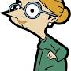
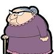

1) The childish Mr Bean uses his unusual wit to fulfil everyday tasks. But more often than not, he ends up creating trouble for himself and those around him.
2) Irma Gobb is a main character in Mr. Bean and Mr. Bean: The Animated Series. She is portrayed as Mr. Bean's girlfriend.
3) Mrs. Wicket is a main character, main antagonist, and the deuteragonist of the animated series, especially in the first three seasons. She is Mr. Bean's landlady. She is portrayed as a hot-headed, bossy, greedy, selfish, grumpy, unhappy, overweight old woman.